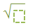
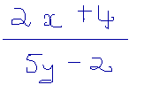

(for nth roots only)


See below a non-exhaustive list of supported characters. Default characters can be displayed in the math-grm-maw.def grammar definition file in the maw-sample project.
| Type of item | Example |
|---|---|
| Letters (Latin alphabet) | a b c d e f g h i j k l m n o p q r s t u v w x y z A B C D E F G H I J K L M N O P Q R S T U V W X Y Z |
| Digits | 0 1 2 3 4 5 6 7 8 9 |
| Mathematical symbols (including operators) | € $ £ ¥ ₩ ¢ ( ) < > [ ] { } ! # % & ? @ / \ ℂ ℕ ℚ ℝ ℤ + - ± × ÷ * ∘ · = ‘ , . : ; _ ← ↑ → ↓ ↔ ↕ ↖ ↗ ↘ ↙ ⇐ ⇑ ⇒ ⇓ ⇔ ⇕ ∀ ∃ ∄ ∈ ∉ ∋ ∌ ∩ ∪ ⊂ ⊃ ⊄ ⊅ ∼ ≃ ≠ ≡ ≢ ≤ ≥ ≪ ≫ ∝ ∠ ∏ ∑ ∫∮∧ √ |
| Greek symbols frequently used in mathematics | Γ Δ Ω α β γ δ ε η θ λ ν π ρ σ τ φ χ ψ ω ϕ µ |
It is possible to recognize certain mathematical or scientific text-based terms, by attaching the default grammar provided (math-grm-maw.res). These obviously must use the characters supported by the math-ak.res resource. It is also possible to recognize others, if necessary, by using a custom grammar. Here are some examples of units, variables, etc. that are recognizable by the Math SDK using its default resources.
| Type of item | Example |
|---|---|
| International convention units (weight, length, frequency, luminosity, dosage, pressure, etc.) |
km hm dam dm cm mm µm ha hl dal dl cl ml µl kg hg dag dg cg mg µg ms µs GHz MHz kHz Hz |
| Mathematical terms (ratios, functions, etc.) | sin cos tan sinh cosh tanh arcsin arccos arctan cot coth min max arg argmin argmax inf sup lim liminf limsup ln log dx dy dz dt |
Please note that text items (for example: cos, sin, median etc.) can be written in a cursive or printed style, ie. or .
Each grammar sets out a number of production rules for equations, namely:
| Type of rule | Written example | LaTeX result |
|---|---|---|
| Horizontal pair | ||
| Fence | ||
| Square root  | ||
| Fraction |  | |
| Subscript | ||
| Superscript | ||
| Subsuperscript | ||
| Presuperscript |
(for nth roots only) |
|
| Overscript | ||
| Underscript |
||
| Underoverscript | |
The solver is activated only if the equation contains numbers and/or fractions and at least one of the following operators:
The Math Widget offers the possibility to export results in 5 different formats:
\dfrac {-b\pm \sqrt {b^{2}-4ac}}{2a}
<math xmlns='[http://www.w3.org/1998/Math/MathML'>](http://www.w3.org/1998/Math/MathML'>);
<mfrac>
<mrow>
<mo> - </mo>
<mi> b </mi>
<mo> ± <!-- plus-minus sign --> </mo>
<msqrt>
<msup>
<mrow>
<mi> b </mi>
</mrow>
<mrow>
<mn> 2 </mn>
</mrow>
</msup>
<mo> - </mo>
<mn> 4 </mn>
<mi> a </mi>
<mi> c </mi>
</msqrt>
</mrow>
<mrow>
<mn> 2 </mn>
<mi> a </mi>
</mrow>
</mfrac>
</math>It is possible to reload a result into the Math Widget, using a symbol list or some binary data previously generated.
Characters stay handwritten until solving is activated manually if needed. Text is then typeset and solved at the same time.
Characters are automatically typeset after a short delay, using standard math fonts or custom fonts. If needed, solving has to be activated manually.
Characters are typeset after a short delay, using standard math fonts or custom fonts, and the whole operation is solved, provided that its characters are supported by the solver (see above).